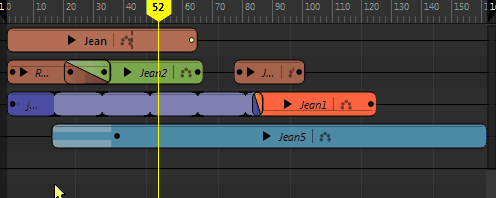
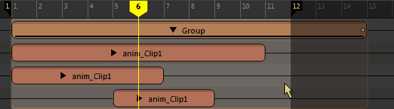
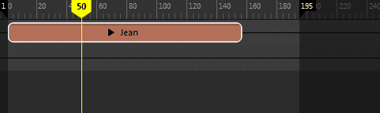
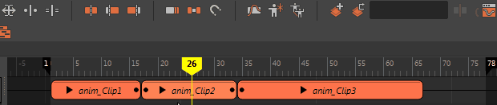

时间编辑器工具栏位于“时间编辑器”(Time Editor)窗口的顶部。

-
禁用/取消禁用时间编辑器(Mute/Unmute Time Editor)

- 暂时禁用“时间编辑器”(Time Editor)，以便调整动画。“禁用/取消禁用时间编辑器”(Mute/Unmute Time Editor)选项用于断开所有属性以创作新动画（包括“约束”(Constraints)、“设置受驱动关键帧”(Set Driven Keys)等），使您能够切换回 Maya 的非时间编辑器驱动模式。请参见禁用时间编辑器。
- 此操作的热键是 Q。
- 从当前选择创建动画片段(Create Animation Clip from Selection)

- 添加内容选自“大纲视图”(Outliner)或“视口”(Viewport)的片段。单击“从场景选择中添加动画”(Add Animation from Scene Selection) >
 ，以打开将动画添加到时间编辑器(Add Animation to the Time Editor)选项。另请参见使用时间编辑器片段。
，以打开将动画添加到时间编辑器(Add Animation to the Time Editor)选项。另请参见使用时间编辑器片段。
- 此操作的热键是 O。
- 创建姿势片段(Create Pose Clip)
- 创建一个姿势片段，将一帧片段转变为源动画。请参见从姿势片段创建动画。
- 此操作的热键是 P。
- 分组(Group)

- 将选定片段组合成一个组片段。请参见将多个片段合并为组片段。

- 此操作的热键是 Ctrl+G。
- 解组(Ungroup)

- 解组选定组片段并将组内的所有片段恢复到本地时间。
注： 如果包含组片段的轨迹没有其他片段，则轨迹也会被删除。注： 仅当选择组片段时，该选项才处于活动状态。
- 此操作的热键是 Ctrl+Shift+G。
- 编辑模式(Edit Mode)菜单
- 用于修剪、缩放、循环或保持动画片段。
-
-
修剪(Trim)

- 用于设置片段的输入和输出点，这样只有原始源的一部分影响片段。从“编辑模式”(Edit Mode)菜单中选择“修剪”(Trim)，然后将光标放到片段的左边或右边。请注意光标外观的变化。拖动光标即可修剪。

片段顶部的负数表示已修剪的帧数。
子片段上的白点表示它因父片段而修剪。如果子片段太小而无法显示，则不显示白点。

已修剪片段上的黑点表示在片段之外有动画。
有关详细信息，请参见时间编辑器片段符号。
-
提示： “修剪”(Trim)模式是时间编辑器的默认“编辑”(Edit)模式。也可以在选择片段后按住 E 键来激活“修剪”(Trim)模式。
-
比例(Scale)

- 用于加快或减慢片段的动画速度。从“编辑模式”(Edit Mode)菜单中选择“缩放”(Scale)，然后将光标放到片段的左边或右边。请注意光标外观的变化。拖动光标即可缩放。

缩放百分比将显示在片段的顶部。
提示： 也可以在选择片段后按住 R 键来激活“缩放”(Scale)模式。注： 系统将在片段的修剪边或延伸边处显示一些特殊符号，用于说明内部所含动画的状态。有关详细信息，请参见时间编辑器片段符号。 -
循环(Loop)

- 用于多次按顺序重复片段的动画。从“编辑模式”(Edit Mode)菜单中选择“循环”(Loop)，将光标放到片段的左边或右边，然后拖动以进行循环。

若要调整循环，请单击并拖动片段的已循环区域的边。显示的“之后的循环”(Loop After)值（上图中为 0.3）表示片段包含的循环数。如果循环片段的左侧，则它是“之前的循环”(Loop Before)值。 缩放、修剪或循环片段时，片段的虚拟边界将变为实际边界以执行所有编辑操作。
提示： 也可以在选择片段后按住 T 键来激活“循环”(Loop)模式。 - 通过“属性编辑器”(Attribute Editor)中的“之前的片段循环模式”(Clip Loop Before Mode)/“之后的片段循环模式”(Clip Loop After Mode)，您可以分别在片段的开始和结束处设置循环。您可在其中找到两类循环模式：“周期”(Cyclical)模式会重复动画本身，而“渐进”(Progressive)模式会在偏移的基础上重复动画，因此可用于创建循环行走。有关这两种循环方法的说明，请参见时间编辑器中的循环类型。
-
注： 应用“保持”(Hold)或“循环”(Looping)之后，片段无法分割。可以改为先将其变为组片段，然后再进行分割。
-
注： 若要使用具有循环片段的动画层，请从该片段创建组片段，然后将层添加到组。
- 请参见：
- 保持(Hold)

- 用于延伸片段的最后一个姿势帧，使其保持指定的一段时间。从“编辑模式”(Edit Mode)菜单中选择“保持”(Hold)，然后将光标放置到片段的左边或右边。请注意光标外观的变化。将光标拖动到所需的“保持”(Hold)长度。
-
 提示： 也可以在选择片段后按住 Y 键来激活“保持”(Hold)模式。
提示： 也可以在选择片段后按住 Y 键来激活“保持”(Hold)模式。 -
注： 应用“保持”(Hold)或“循环”(Looping)之后，片段无法分割。可以改为先将其变为组片段，然后再进行分割。
-
修剪(Trim)
- 在当前帧分割片段(Split Clip at Current Frame)

- 在当前时间标记位置将选定片段一分为二。

- 此操作的热键是 W。
- 剪去前方(Trim Before)

- 在当前时间标记位置将选定片段一分为二，然后删除前面的部分。

- 此操作的热键是 G。
- 剪去后方(Trim After)

- 在当前时间标记位置将选定片段一分为二，然后删除后前的部分。

- 此操作的热键是 H。
- 切换涟漪(Toggle Ripple)
- 用于在时间轴中调整片段，而不影响相邻片段。此选项处于活动状态时，对片段中一个快照所做的更改将传播到其他快照。因此，如果加长一个快照，则其他快照也会随之移动，以保持与经过修改的快照之间的距离。
- 例如，如果在“涟漪编辑”(Ripple Edit)处于活动状态时延长片段，则该片段稍后将推动后面的片段。相反，如果“涟漪编辑”(Ripple Edit)在延长片段时被禁用，则延长的片段会拖动到其他片段之上并将其覆盖。通过涟漪编辑，可以使周围的片段容纳对选定片段执行的操作（例如，移动、移除、添加、缩放或循环）。

-
注： “涟漪编辑”(Ripple Edit)模式仅影响编辑右侧的片段。编辑左侧的片段将不受影响。
- 激活此模式的热键是 U。
- 切换保持过渡(Toggle Keep Transitions)
- 用于保持由过渡链接的片段之间的关系，以便重新进行组织。否则，如果在轨迹上移动由过渡链接的片段，则过渡将断开。请参见创建时间编辑器片段之间的过渡。
-

- 切换捕捉(Toggle Snap)
- 处于活动状态时，将片段移动到以下位置：
- 相邻片段/另一个轨迹上的片段的起点或终点
- 当前时间标记的位置
- 播放范围的起点或终点
- 曲线图编辑器权重曲线(Graph Editor Weight Curve)

- 在曲线图编辑器中打开选定片段的动画和权重曲线，使您能够提高曲线编辑的精确度。
注： 仅权重曲线将自动在大纲视图中处于选中状态，因此会单独显示在“曲线图编辑器”(Graph Editor)中。请参见设置时间编辑器片段权重的关键帧。
- 匹配重定位器(Match Relocators)
- 用于根据选定片段对齐片段以将其合并，然后创建新动画。请参见使用时间编辑器重定位器匹配姿势。
- 创建重定位器(Create Relocator)

- 为选定动画创建一个重定位器，这是可用于将动画角色移动到其他位置的标记。对于具有重定位器的片段，在片段名称旁边标有 图标。
注：
- 您可以在片段根的平均位置和旋转处找到重定位器。若要查看重定位器，请从时间编辑器菜单栏主题中的“重新定位”(Relocate)菜单选择“选择重定位器”(Select Relocator)。
- 如果动画片段由多个根驱动，请改为选择“重新定位 > 创建重定位器”(Relocate > Create Relocator) > 以打开Relocator Options(重定位器选项)。在其中，您可以从列表中（包括场景中的所有根对象）创建一个重定位器。
- 请参见通过重新定位重新确定角色的方向。
- 创建相加层(Create Additive Layer)

- 将选定对象的相加层添加到时间编辑器。请参见将动画层添加到时间编辑器。
- 此操作的热键是 L。
- 创建覆盖层(Create Override Layer)

- 将选定对象的覆盖层添加到时间编辑器。请参见将动画层添加到时间编辑器。
- 此操作的热键是 Shift+L。
- 活动层(Active Layer)字段
- 显示选定层片段的名称。如果已选择层片段，则显示层所属的片段。请参见将动画层添加到时间编辑器。
注： 在时间编辑器中设置关键帧时，必须将层设置为活动，使其可以接收关键帧。
- 设置关键帧(Set Keyframe)

-
注： 仅当片段具有动画层时，此图标才可见。请参见将动画层添加到时间编辑器。
- 在活动层上设置关键帧。
根据在视口中所做的选择，将为通道盒的不同属性设置关键帧。
- 未选择任何对象(Nothing selected)：为层中的所有属性设置关键帧
- 选定对象(Objects selected)：为选定对象的所有属性设置关键帧
- 选定通道盒属性(Channel Box attributes select)：仅为与在通道盒中所做的选择匹配的活动层属性设置关键帧
- 此操作的热键是 S。
- 设置零关键帧(Set Zero Keyframe)

-
注： 仅当片段具有动画层时，此图标才可见。请参见将动画层添加到时间编辑器。
-
通过零关键帧，可以定义希望层的动画不偏移原始动画的时间点。使用零关键帧可以划分希望层的动画开始和结束的时间范围。
-
例如，如果动画序列有 50 帧，且只希望修改帧 20 和帧 30 之间的动画，则在帧 20 和帧 30 处设定零关键帧以括起要编辑的区域。在帧 20 和帧 30 之间创建修改的动画，然后播放结果动画。原始动画在帧 20 之前和帧 30 之后可完整播放，且修改的动画在这两帧之间可完整播放。
- 此操作的热键是 D。
- 曲线图编辑器(Graph Editor)

- 在“曲线图编辑器”(Graph Editor)中打开选定片段的动画曲线。请参见在曲线图编辑器中修改时间编辑器片段。
- 打开内容浏览器(Open Content Browser)

- 打开“内容浏览器”(Content Browser)，可以在其中将示例文件加载到时间编辑器。
- 打开游戏导出器(Open Game Exporter)
- 打开“游戏导出器”(Game Exporter)，用于将动画片段发送到游戏引擎。请参见将时间编辑器片段导出到游戏导出器。
- “合成”(Composition)列表
- 列出与场景关联的合成。展开“合成”(Composition)列表，将显示用于“删除”(Delete)或“重命名”(Rename)活动合成的选项。
- 新建(New)

- 用于创建新合成。就像书中的新页一样，合成可用于将多个视图添加到时间编辑器。请参见通过时间编辑器创建多个动画故事。
- 复制(Duplicate)
- 用于复制当前合成，以便能够体验不同的结果。为新合成创建名称并从“合成”(Composition)列表中选择它，以便将其载入时间编辑器。